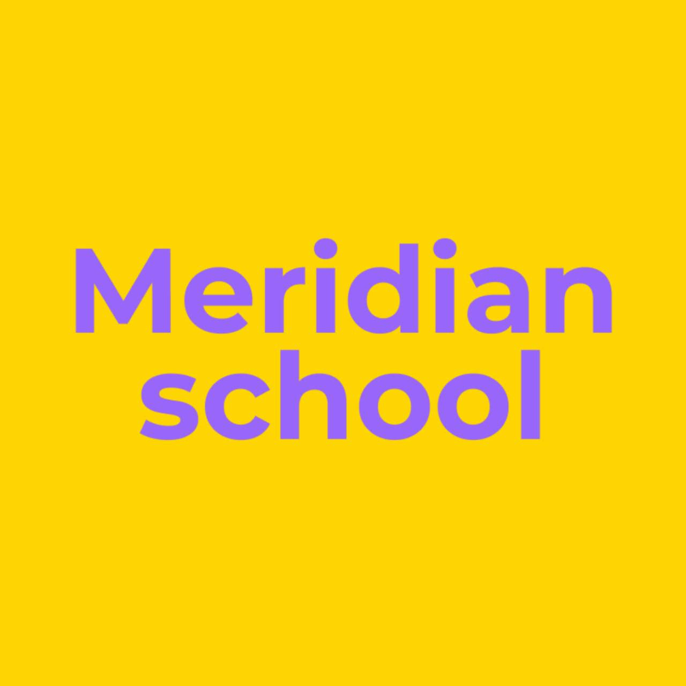

MERIDIAN SCHOOLЧитаю
по-английски
сам! ✨
Ребёнок учит английский, но до сих пор не может самостоятельно читать?
Знает буквы, помнит отдельные слова, но постоянно спрашивает: «Мам, а как это читается?»
Поможем разобраться в правилах английского чтения за 3 недели.
Старт 23 ноября 2026 · Доступ до 15 января 2027
Узнаёте своего ребёнка?
Не нужно учить всё заново. Поможем собрать знания в навык чтения.
Как проходит урок?
Короткие понятные шаги. Ребёнок не просто смотрит видео — сразу пробует читать.
3–5 минут объяснения правила
Интерактивные задания на закрепление
Пирамидка от слова к предложению
Короткие рассказы и рабочие листы
Программа марафона
4 подготовительных урока + 12 основных. Откройте блок, чтобы узнать, чему научится ребёнок.
Как мы поддерживаем результат
Каждую неделю ребёнок присылает небольшой отчёт по чтению. За все три отчёта — именной сертификат участника.
Попробуйте один урок
Посмотрите, как ребёнок будет учиться: видео, игра и пирамидка чтения.
Кто ведёт марафон?

Преподаватель английского с 18-летним опытом, основатель школы Meridian.
Школа работает с 2017 года. Более 1000 выпускников.
Частые вопросы
Подойдёт ли второкласснику?
Да, если ребёнок знаком с частью английских букв и звуков, но пока не умеет уверенно читать новые слова.
А если ребёнок совсем не читает?
В марафоне есть четыре подготовительных урока. Если ребёнок начинает с полного нуля, ему может потребоваться больше подготовки.
Нужно ли сидеть рядом с ребёнком?
На первых занятиях может понадобиться помощь с организацией. Объяснения и упражнения рассчитаны на самостоятельную работу.
Заменит ли марафон школьный английский?
Нет, мы тренируем конкретный навык — чтение слов и коротких текстов по изученным правилам.
Как попасть в закрытый канал?
После оплаты вы получите инструкцию для подачи заявки в закрытый Telegram-канал. Администратор сверит оплату и одобрит заявку.
Как получить сертификат?
Присылайте один отчёт по чтению в конце каждой из трёх недель. За три отчёта выдаём именной сертификат участника.
Когда будут доступны занятия?
Старт 23 ноября 2026 года. Новые уроки выходят четыре раза в неделю: три занятия с новыми правилами и одно повторение. Видеоуроки останутся доступны до 15 января 2027 года.
Пусть ребёнок попробует читать сам! 💜
Понятные правила, короткие занятия и практика, которую можно проходить дома.
Специальная цена для первых 10 участников
Сейчас действует тестовый способ оплаты по ссылке ЮKassa. До начала продаж мы подключим автоматическую проверку платежа и страницу подачи заявки. Цена 990 ₽ для первых 10 оплат пока не ограничивается технически.
Старт 23 ноября 2026 · Видеоуроки доступны до 15 января 2027. Доступ в закрытый канал предоставляется после сверки оплаты.